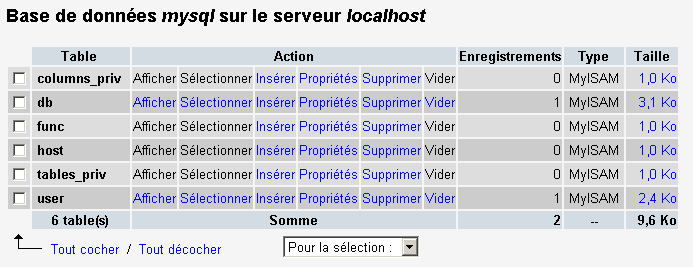

8. Anexos
8.1. Herramientas de desarrollo web
Aquí indicamos dónde encontrar y cómo instalar las herramientas necesarias para el desarrollo web. Algunas herramientas han visto evolucionar sus versiones y es posible que las explicaciones aquí dadas ya no sean adecuadas para las versiones más recientes. El lector deberá entonces adaptarse... En el curso de programación web, utilizaremos esencialmente las siguientes herramientas, todas ellas disponibles de forma gratuita:
- un navegador reciente capaz de visualizar XML. Los ejemplos del curso se han probado con Internet Explorer 6.
- un JDK (Java Development Kit) reciente. Los ejemplos del curso se han probado con el JDK 1.4. Este JDK incluye el complemento Java 1.4 para navegadores, lo que permite a estos últimos mostrar applets Java que utilicen Java 1.4.
- Un entorno de desarrollo Java para escribir servlets Java. En este caso, se trata de JBuilder 7.
- Servidores web: Apache, PWS (Personal Web Server), Tomcat.
- Apache se utilizará para el desarrollo de aplicaciones web en PERL (Practical Extracting and Reporting Language) o PHP (Personal Home Page)
- PWS se utilizará para el desarrollo de aplicaciones web en ASP (Active Server Pages) o PHP
- Tomcat se utilizará para el desarrollo de aplicaciones web mediante servlets Java o páginas JSP (Java Server Pages)
- una aplicación de gestión de bases de datos: MySQL
- EasyPHP: una herramienta que integra el servidor web Apache, el lenguaje PHP y el SGBD MySQL
8.1.1. Servidores web, navegadores, lenguajes de scripting
- Servidores web principales
- Apache (Linux, Windows)
- Interner Information Server IIS (NT), Personal Web Server PWS (Windows 9x)
- Principales navegadores
- Internet Explorer (Windows)
- Netscape (Linux, Windows)
- Lenguajes de script del lado del servidor
- VBScript (IIS, PWS)
- JavaScript (IIS, PWS)
- Perl (Apache, IIS, PWS)
- PHP (Apache, IIS, PWS)
- Java (Apache, Tomcat)
- Lenguajes .NET
- Lenguajes de scripting del lado del navegador
- VBScript (IE)
- Javascript (IE, Netscape)
- PerlScript (IE)
- Java (IE, Netscape)
8.1.2. Dónde encontrar las herramientas
http://www.netscape.com/ (enlace de descargas) | |
http://www.microsoft.com/windows/ie/default.asp | |
http://www.php.net http://www.php.net/downloads.php (Binarios de Windows) | |
http://www.activestate.com http://www.activestate.com/Productos/ http://www.activestate.com/Productos/ActivePerl/ | |
http://msdn.microsoft.com/scripting (siga el enlace de Windows Script) | |
http://java.sun.com/ http://java.sun.com/downloads.html (JSE) http://java.sun.com/j2se/1.4/download.html | |
http://www.apache.org/ http://www.apache.org/dist/httpd/binaries/win32/ | |
incluido en NT 4.0 Option paquete para Windows 95 incluido en CD de Windows 98 http://www.microsoft.com/ntserver/nts/downloads/recommended/NT4OptPk/win95.asp | |
http://www.microsoft.com | |
http://jakarta.apache.org/tomcat/ | |
http://www.borland.com/jbuilder/ http://www.borland.com/productos/descargas/descargar_jbuilder.html | |
http://www.easyphp.org/ http://www.easyphp.org/telechargements.php3 |
8.1.3. EasyPHP
Esta aplicación es muy práctica, ya que reúne en un mismo paquete:
- el servidor web Apache (1.3.x)
- el lenguaje PHP (4.x)
- el SGBD MySQL (3.23.x)
- una herramienta de administración de MySQL: PhpMyAdmin
La aplicación de instalación tiene el siguiente aspecto:

La instalación de EasyPHP no presenta problemas y se crea una estructura de directorios en el sistema de archivos:

el ejecutable de la aplicación | |
la estructura de directorios del servidor Apache | |
la estructura de directorios de SGBD mysql | |
la estructura de la aplicación phpmyadmin | |
la estructura de php | |
Raíz del árbol de páginas web servidas por el servidor Apache de EasyPHP | |
árbol en el que se pueden colocar scripts CGI para el servidor Apache |
La principal ventaja de EasyPHP es que la aplicación viene preconfigurada. Así, Apache, PHP y MySQL ya están configurados para funcionar juntos. Al iniciar EasyPhp mediante su enlace en el menú de programas, aparece un icono en la parte inferior derecha de la pantalla.
 |
Es la E con un punto rojo la que debe parpadear si el servidor web Apache y la base de datos MySQL están operativos. Al hacer clic con el botón derecho del ratón, se accede a las opciones del menú:

El option Administration permite realizar ajustes y pruebas de funcionamiento:

8.1.3.1. Administración PHP
El botón «Información» php le permite comprobar el correcto funcionamiento del conjunto Apache-PHP: debe aparecer una página de información PHP:

El botón «Extensiones» muestra la lista de extensiones instaladas para php. En realidad, se trata de bibliotecas de funciones.

La pantalla anterior muestra, por ejemplo, que las funciones necesarias para utilizar la base MySQL están presentes.
El botón «Parámetros» muestra el login/motdepasse del administrador de la base de datos MySQL.

El uso de la base de datos MySQL excede el alcance de esta breve presentación, pero queda claro aquí que sería necesario establecer una contraseña para el administrador de la base de datos.
8.1.3.2. Administración de Apache
Siempre en la página de administración de EasyPHP, el enlace «sus alias» permite definir alias asociados a un directorio. Esto permite colocar páginas web en otro lugar que no sea el directorio www del árbol de easyPhp.

Si en la página anterior se introduce la siguiente información:

y se utiliza el botón valider, se añaden las siguientes líneas al archivo <easyphp>\apache\conf\httpd.conf:
Alias /st/ "e:/data/serge/web/"
<Directory "e:/data/serge/web">
Options FollowSymLinks Indexes
AllowOverride None
Order deny,allow
allow from 127.0.0.1
deny from all
</Directory>
<easyphp> designa el directorio de instalación de EasyPHP. httpd.conf es el archivo de configuración del servidor Apache. Por lo tanto, se puede hacer lo mismo editando directamente este archivo. Normalmente, Apache aplica inmediatamente cualquier modificación del archivo httpd.conf. Si no fuera así, habría que detenerlo y volver a iniciarlo, siempre mediante el icono de easyphp:
Para terminar nuestro ejemplo, ahora podemos colocar páginas web en el árbol de directorios e:\data\serge\web:
y solicitar esta página utilizando el alias st:

En este ejemplo, el servidor Apache se ha configurado para funcionar en el puerto 81. Su puerto predeterminado es el 80. Esto se controla mediante la siguiente línea del archivo httpd.conf que ya hemos visto:
8.1.3.3. El archivo de configuración de Apache htpd.conf
Cuando se desea realizar una configuración más detallada de Apache, es necesario modificar «manualmente» su archivo de configuración httpd.conf, ubicado aquí, en la carpeta <easyphp>\apache\conf:

A continuación se indican algunos puntos a tener en cuenta de este archivo de configuración:
función | |
indica la carpeta donde se encuentra el árbol de directorios de Apache | |
indica en qué puerto va a funcionar el servidor web. Normalmente es el 80. Al cambiar esta línea, se puede hacer que el servidor web funcione en otro puerto | |
la dirección de correo electrónico del administrador del servidor Apache | |
el nombre del equipo en el que «funciona» el servidor Apache | |
el directorio de instalación del servidor Apache. Cuando en el archivo de configuración aparecen nombres de archivos relativos, estos son relativos con respecto a esta carpeta. | |
la carpeta raíz del árbol de páginas web servidas por el servidor. Aquí, url http://máquina/rep1/fic1.html corresponderá al archivo E:\Program Files\EasyPHP\www \rep1\fic1.html | |
establece las propiedades de la carpeta anterior | |
carpeta de registros, por lo que en realidad <ServerRoot>\logs\error.log : E:\Program Files\EasyPHP\apache\logs\error.log. Este es el archivo que debe consultar si observa que el servidor Apache no funciona. | |
E:\Archivos de programa\EasyPHP\cgi-bin será la raíz del árbol de directorios donde se podrán colocar los scripts CGI. Así, el URL http://máquina/cgi-bin/rep1/script1.pl será el url del script CGI E:\Archivos de programa\EasyPHP\cgi-bin \rep1\script1.pl. | |
establece las propiedades de la carpeta anterior | |
líneas de carga de los módulos que permiten a Apache trabajar con PHP4. | |
establece los sufijos de los archivos que deben considerarse como archivos que deben ser procesados por PHP |
8.1.3.4. Administración de MySQL con PhpMyAdmin
En la página de administración de EasyPhp, haga clic en el botón PhpMyAdmin:

El menú desplegable debajo de Accueil permite ver las bases de datos actuales. |  |
El número entre paréntesis es el número de tablas. Si se selecciona una base de datos, se muestran las tablas de la misma: |  |
La página web ofrece una serie de operaciones sobre la base de datos:

Si se hace clic en el enlace Afficher de user:

Aquí solo hay un usuario: root, que es el administrador de MySQL. Siguiendo el enlace Modifier, se podría cambiar su contraseña, que actualmente está vacía, lo cual no es recomendable para un administrador.
No diremos nada más sobre PhpMyAdmin, que es un software muy completo y que merecería una explicación de varias páginas.
8.1.4. PHP
Hemos visto cómo obtener PHP a través de la aplicación EasyPhp. Para obtener PHP directamente, iremos a la página web http://www.php.net.
PHP no solo se puede utilizar en el ámbito web. También se puede utilizar como lenguaje de scripts en Windows. Cree el siguiente script y guárdelo con el nombre date.php:
<?
// script php que muestra la hora
$maintenant=date("j/m/y, H:i:s",time());
echo "Nous sommes le $maintenant";
?>
En una ventana DOS, vaya al directorio de fecha.php y ejecútelo:
E:\data\serge\php\essais>"e:\program files\easyphp\php\php.exe" date.php
X-Powered-By: PHP/4.2.0
Content-type: text/html
Nous sommes le 18/07/02, 09:31:01
8.1.5. PERL
Es preferible que Internet Explorer ya esté instalado. Si está presente, Active Perl lo configurará para que acepte scripts PERL en las páginas HTML, scripts que serán ejecutados por el propio IE en el lado del cliente. El sitio web de Active Perl se encuentra en URL http://www.activestate.comA. Tras la instalación, PERL se instalará en un directorio que llamaremos <perl>. Contiene la siguiente estructura de directorios:
DEISL1 ISU 32 403 23/06/00 17:16 DeIsL1.isu
BIN <REP> 23/06/00 17:15 bin
LIB <REP> 23/06/00 17:15 lib
HTML <REP> 23/06/00 17:15 html
EG <REP> 23/06/00 17:15 eg
SITE <REP> 23/06/00 17:15 site
HTMLHELP <REP> 28/06/00 18:37 htmlhelp
El ejecutable perl.exe se encuentra en <perl>\bin. Perl es un lenguaje de scripting que funciona en Windows y Unix. Además, se utiliza en la programación WEB. Escribamos un primer script:
# script PERL affichant l'heure
# modules
use strict;
# programme
my ($secondes,$minutes,$heure)=localtime(time);
print "Il est $heure:$minutes:$secondes\n";
Guarde este script en un archivo heure.pl. Abra una ventana DOS, vaya al directorio del script anterior y ejecútelo:
E:\data\serge\Perl\Essais>e:\perl\bin\perl.exe heure.pl
Il est 9:34:21
8.1.6. Vbscript, Javascript, Perlscript
Estos lenguajes son lenguajes de script para Windows. Pueden funcionar en diferentes entornos, como
- Windows Scripting Host para su uso directo en Windows, especialmente para escribir scripts de administración del sistema
- Internet Explorer. En este caso, se utiliza dentro de páginas HTML a las que aporta una cierta interactividad imposible de lograr solo con el lenguaje HTML.
- Internet Information Server (IIS), el servidor web de Microsoft en NT/2000, y su equivalente Personal Web Server (PWS) en Win9x. En este caso, vbscript se utiliza para la programación del lado del servidor web, tecnología denominada ASP (Active Server Pages) por Microsoft.
Se descarga el archivo de instalación en URL: http://msdn.microsoft.com/scripting y se siguen los enlaces de Windows Script. Se instalan:
- el contenedor Windows Scripting Host, que permite el uso de diversos lenguajes de script, como Vbscript y Javascript, pero también otros como PerlScript, que viene incluido con Active Perl.
- un intérprete VBscript
- un intérprete Javascript
Veamos algunas pruebas rápidas. Creemos el siguiente programa vbscript:
' une classe
class personne
Dim nom
Dim age
End class
' création d'un objet personne
Set p1=new personne
With p1
.nom="dupont"
.age=18
End With
' affichage propriétés personne p1
With p1
wscript.echo "nom=" & .nom
wscript.echo "age=" & .age
End With
Este programa utiliza objetos. Llamémoslo objets.vbs (el sufijo vbs indica que se trata de un archivo vbscript). Vayamos al directorio en el que se encuentra y ejecutémoslo:
E:\data\serge\windowsScripting\vbscript\poly\objets>cscript objets.vbs
Microsoft (R) Windows Script Host Version 5.6
Copyright (C) Microsoft Corporation 1996-2001. All rights reserved.
nom=dupont
age=18
Ahora vamos a crear el siguiente programa javascript que utiliza matrices:
// tabla en una variante
// tabla vacía
tableau=new Array();
affiche(tableau);
// tabla que crece dinámicamente
for(i=0;i<3;i++){
tableau.push(i*10);
}
// visualización de tabla
affiche(tableau);
// otra vez
for(i=3;i<6;i++){
tableau.push(i*10);
}
affiche(tableau);
// tableaux à plusieurs dimensions
WScript.echo("-----------------------------");
tableau2=new Array();
for(i=0;i<3;i++){
tableau2.push(new Array());
for(j=0;j<4;j++){
tableau2[i].push(i*10+j);
}//for j
}// for i
affiche2(tableau2);
// fin
WScript.quit(0);
// ---------------------------------------------------------
function affiche(tableau){
// visualización de tabla
for(i=0;i<tableau.length;i++){
WScript.echo("tableau[" + i + "]=" + tableau[i]);
}//para
}//función
// ---------------------------------------------------------
function affiche2(tableau){
// visualización de tabla
for(i=0;i<tableau.length;i++){
for(j=0;j<tableau[i].length;j++){
WScript.echo("tableau[" + i + "," + j + "]=" + tableau[i][j]);
}// for j
}//for i
}//función
Este programa utiliza tablas. Llamémoslo tablas.js (el sufijo js designa un archivo javascript). Vayamos al directorio en el que se encuentra y ejecutémoslo:
E:\data\serge\windowsScripting\javascript\poly\tableaux>cscript tableaux.js
Microsoft (R) Windows Script Host Version 5.6
Copyright (C) Microsoft Corporation 1996-2001. Tous droits réservés.
tableau[0]=0
tableau[1]=10
tableau[2]=20
tableau[0]=0
tableau[1]=10
tableau[2]=20
tableau[3]=30
tableau[4]=40
tableau[5]=50
-----------------------------
tableau[0,0]=0
tableau[0,1]=1
tableau[0,2]=2
tableau[0,3]=3
tableau[1,0]=10
tableau[1,1]=11
tableau[1,2]=12
tableau[1,3]=13
tableau[2,0]=20
tableau[2,1]=21
tableau[2,2]=22
tableau[2,3]=23
Un último ejemplo en Perlscript para terminar. Es necesario tener instalado Active Perl para poder acceder a Perlscript.
<job id="PERL1">
<script language="PerlScript">
# du Perl classique
%dico=("maurice"=>"juliette","philippe"=>"marianne");
@cles= keys %dico;
for ($i=0;$i<=$#claves;$i++){
$cle=$cles[$i];
$valeur=$dico{$cle};
$WScript->echo ("clé=".$cle.", valeur=".$valeur);
}
# du perlscript utilisant les objets Windows Script
$dico=$WScript->CreateObject("Scripting.Dictionary");
$dico->add("maurice","juliette");
$dico->add("philippe","marianne");
$WScript->echo($dico->item("maurice"));
$WScript->echo($dico->item("philippe"));
</script>
</job>
Este programa muestra la creación y el uso de dos diccionarios: uno al estilo clásico de Perl y otro con el objeto Scripting Dictionary de Windows Script. Guardemos este código en el archivo dico.wsf (wsf es la extensión de los archivos de Windows Script). Vayamos a la carpeta de este programa y ejecutémoslo:
E:\data\serge\windowsScripting\perlscript\essais>cscript dico.wsf
Microsoft (R) Windows Script Host Version 5.6
Copyright (C) Microsoft Corporation 1996-2001. Tous droits réservés.
clé=philippe, valeur=marianne
clé=maurice, valeur=juliette
juliette
marianne
Perlscript puede utilizar los objetos del contenedor en el que se ejecuta. En este caso, se trataba de objetos del contenedor Windows Script. En el contexto de la programación web, los scripts VBscript, Javascript, Perlscript pueden ejecutarse tanto en el navegador IE como en un servidor PWS o IIS. Si el script es algo complejo, puede ser conveniente probarlo fuera del contexto web, dentro del contenedor Windows Script, tal y como se ha visto anteriormente. De este modo, solo se podrán probar las funciones del script que no utilicen objetos propios del navegador o del servidor. A pesar de esta restricción, esta posibilidad sigue siendo interesante, ya que, por lo general, resulta bastante poco práctico depurar scripts que se ejecutan en servidores web o navegadores.
8.1.7. JAVA
Java está disponible en URL: http://www.sun.com (véase el inicio de este documento) y se instala en un árbol de directorios que llamaremos <java>, que contiene los siguientes elementos:
22/05/2002 05:51 <DIR> .
22/05/2002 05:51 <DIR> ..
22/05/2002 05:51 <DIR> bin
22/05/2002 05:51 <DIR> jre
07/02/2002 12:52 8 277 README.txt
07/02/2002 12:52 13 853 LICENSE
07/02/2002 12:52 4 516 COPYRIGHT
07/02/2002 12:52 15 290 readme.html
22/05/2002 05:51 <DIR> lib
22/05/2002 05:51 <DIR> include
22/05/2002 05:51 <DIR> demo
07/02/2002 12:52 10 377 848 src.zip
11/02/2002 12:55 <DIR> docs
En la carpeta «bin» se encuentran javac.exe, el compilador de Java, y java.exe, la máquina virtual de Java. Se pueden realizar las siguientes pruebas:
- Escribir el siguiente script:
//programa Java que muestra la hora
import java.io.*;
import java.util.*;
public class heure{
public static void main(String arg[]){
// se recuperan la fecha y la hora
Date maintenant=new Date();
// se muestra
System.out.println("Il est "+maintenant.getHours()+
":"+maintenant.getMinutes()+":"+maintenant.getSeconds());
}//main
}//clase
- Guarde este programa con el nombre heure.java. Abra una ventana DOS. Vaya al directorio del archivo heure.java y compílelo:
D:\data\java\essais>c:\jdk1.3\bin\javac heure.java
Note: heure.java uses or overrides a deprecated API.
Note: Recompile with -deprecation for details.
En el comando anterior, c:\jdk1.3\bin\javac debe sustituirse por la ruta exacta del compilador javac.exe. Debe obtener, en el mismo directorio que heure.java, un archivo heure.class, que es el programa que ahora ejecutará la máquina virtual java.exe.
- Ejecute el programa:
8.1.8. Servidor Apache
Hemos visto que se puede obtener el servidor Apache con la aplicación EasyPhp. Para conseguirlo directamente, iremos al sitio web de Apache: http://www.apache.org. La instalación crea un árbol de directorios donde se encuentran todos los archivos necesarios para el servidor. Llamemos a este directorio <apache>. Contiene un árbol de directorios similar al siguiente:
UNINST ISU 118 805 23/06/00 17:09 Uninst.isu
HTDOCS <REP> 23/06/00 17:09 htdocs
APACHE~1 DLL 299 008 25/02/00 21:11 ApacheCore.dll
ANNOUN~1 3 000 23/02/00 16:51 Announcement
ABOUT_~1 13 197 31/03/99 18:42 ABOUT_APACHE
APACHE EXE 20 480 25/02/00 21:04 Apache.exe
KEYS 36 437 20/08/99 11:57 KEYS
LICENSE 2 907 01/01/99 13:04 LICENSE
MAKEFI~1 TMP 27 370 11/01/00 13:47 Makefile.tmpl
README 2 109 01/04/98 6:59 README
README NT 3 223 19/03/99 9:55 README.NT
WARNIN~1 TXT 339 21/09/98 13:09 WARNING-NT.TXT
BIN <REP> 23/06/00 17:09 bin
MODULES <REP> 23/06/00 17:09 modules
ICONS <REP> 23/06/00 17:09 icons
LOGS <REP> 23/06/00 17:09 logs
CONF <REP> 23/06/00 17:09 conf
CGI-BIN <REP> 23/06/00 17:09 cgi-bin
PROXY <REP> 23/06/00 17:09 proxy
INSTALL LOG 3 779 23/06/00 17:09 install.log
carpeta de archivos de configuración de Apache | |
carpeta de archivos de registro (seguimiento) de Apache | |
los ejecutables de Apache |
8.1.8.1. Configuration
En la carpeta <Apache>\conf se encuentran los siguientes archivos: httpd.conf, srm.conf, access.conf. En las últimas versiones de Apache, los tres archivos se han reunido en httpd.conf. Ya hemos presentado los puntos importantes de este archivo de configuración. En los ejemplos siguientes se ha utilizado para las pruebas el Apache de version de EasyPhp y, por lo tanto, su archivo de configuración. En este, DocumentRoot, que designa la raíz del árbol de páginas web, es e:\program files\easyphp\www.
8.1.8.2. Enlace PHP - Apache
Para realizar la prueba, cree el archivo intro.php con la siguiente línea:
<? phpinfo() ?>
y colocarlo en el directorio raíz de las páginas del servidor Apache (DocumentRoot, como se indica arriba). Accede a URL http://localhost/intro.php. Debería aparecer una lista de información php:

El siguiente script PHP muestra la hora. Ya lo hemos visto antes:
<?
// tiempo: número de milisegundos desde el 01/01/1970
// «formato de visualización de fecha y hora
// d: día en 2 dígitos
// m: mes en dos dígitos
// y: año en dos dígitos
// H: hora 0,23
// i: minutos
// s: segundos
print "Nous sommes le " . date("d/m/y H:i:s",time());
?>
Colocamos este archivo de texto en la raíz de las páginas del servidor Apache (DocumentRoot) y lo llamamos date.php. Accedamos con un navegador a URL http://localhost/date.php. Obtendremos la siguiente página:

8.1.8.3. Enlace PERL-APACHE
Se crea mediante una línea del tipo: ScriptAlias /cgi-bin/ "E:/Program Files/EasyPHP/cgi-bin/" del archivo <apache>\conf\httpd.conf. Su sintaxis es ScriptAlias /cgi-bin/ "<cgi-bin>", donde <cgi-bin> es la carpeta en la que se pueden colocar los scripts CGI. CGI (Common Gateway Interface) es un estándar de comunicación entre el servidor WEB y las aplicaciones. Un cliente solicita al servidor web una página dinámica, c.a.d, es decir, una página generada por un programa. Por lo tanto, el servidor WEB debe solicitar a un programa que genere la página. CGI define la comunicación entre el servidor y el programa, en particular el modo de transmisión de la información entre estas dos entidades.
Si es necesario, modifique la línea ScriptAlias /cgi-bin/ «<cgi-bin>» y reinicie el servidor Apache. A continuación, realice la siguiente prueba:
- Escriba el script:
#!c:\perl\bin\perl.exe
# script PERL affichant l'heure
# modules
use strict;
# programme
my ($secondes,$minutes,$heure)=localtime(time);
print <<FINHTML
Content-Type: text/html
<html>
<head>
<title>heure</title>
</head>
<body>
<h1>Il est $heure:$minutes:$secondes</h1>
</body>
FINHTML
;
- Coloque este script en <cgi-bin>\heure.pl, donde <cgi-bin> es la carpeta que puede recibir scripts CGI (véase httpd.conf). La primera línea #!c:\perl\bin\perl.exe indica la ruta del ejecutable perl.exe. Modifíquela si es necesario.
- Inicie Apache si aún no lo ha hecho
- Acceda con un navegador a URL http://localhost/cgi-bin/heure.pl. Se obtiene la siguiente página:

8.1.9. El servidor PWS
8.1.9.1. Installation
El servidor PWS (Personal Web Server) es una versión personalizada del servidor IIS (Internet Information Server) de Microsoft. Este último está disponible en los equipos con Windows 2000. En los equipos con Win9x, PWS suele estar disponible con el paquete de instalación de Internet Explorer. Sin embargo, no se instala de forma predeterminada. Es necesario realizar una instalación personalizada de IE y solicitar la instalación de PWS. Además, está disponible en el paquete NT 4.0 Option para Windows 95.
8.1.9.2. Primeras pruebas
La raíz de las páginas web del servidor PWS es unidad:\inetpub\wwwroot, donde unidad es el disco en el que ha instalado PWS. A continuación, suponemos que esta unidad es D. Así, url http://máquina/rep1/página1.html corresponderá al archivo d:\inetpub\wwwroot\rep1\page1.html. El servidor PWS interpreta cualquier archivo con la extensión .asp (Active Server Pages) como un script que debe ejecutar para generar una página HTML.
PWS funciona por defecto en el puerto 80. El servidor web Apache también... Por lo tanto, hay que detener Apache para trabajar con PWS si se tienen ambos servidores. La otra solución es configurar Apache para que funcione en otro puerto. Así, en el archivo de configuración de Apache httpd.conf, se sustituye la línea Port 80 por Port 81; a partir de ese momento, Apache funcionará en el puerto 81 y podrá utilizarse al mismo tiempo que PWS. Si se ha iniciado PWS y se solicita URL http://localhost, se obtiene una página similar a la siguiente:

8.1.9.3. Enlace PHP - PWS
- A continuación encontrará un archivo .reg destinado a modificar el registro. Haga doble clic en este archivo para modificar el registro. Aquí, el archivo dll necesario se encuentra en d:\php4 junto con el ejecutable de php. Modifíquelo si es necesario. Las barras \ deben duplicarse en la ruta de la DLL.
REGEDIT4
[HKEY_LOCAL_MACHINE\SYSTEM\CurrentControlSet\Services\w3svc\parameters\Script Map]
".php"="d:\\php4\\php4isapi.dll"
- Reinicie el equipo para que se apliquen los cambios en el Registro.
- Cree una carpeta php dentro de d:\inetpub\wwwroot, que es la raíz del servidor PWS. Una vez hecho esto, active PWS y vaya a la pestaña «Avanzado». Seleccione el botón «Añadir» para crear una carpeta virtual:
Directorio/Examinar: d:\inetpub\wwwroot\php
Alias: php
Marque la casilla «Ejecutar».
- Confirme los cambios y reinicie PWS. Coloque en d:\inetpub\wwwroot\php el archivo intro.php, que contiene únicamente la siguiente línea:
<? phpinfo() ?>
- Solicite al servidor PWS el URL http://localhost/php/intro.php. Debería aparecer la lista de información php que ya se ha mostrado con Apache.
8.1.10. Tomcat: servlets Java y páginas JSP (Java Server Pages)
Tomcat es un servidor web que permite generar páginas HTML mediante servlets (programas Java ejecutados por el servidor web) o páginas JSP (Java Server Pages), páginas que combinan código Java y código HTML. Es el equivalente a las páginas ASP (Active Server Pages) del servidor IIS/PWS de Microsoft, donde se mezcla código VBScript o Javascript con código HTML.
8.1.10.1. Installation
Tomcat está disponible en URL: http://jakarta.apache.org. Se descarga un archivo .exe de instalación. Al ejecutar este programa, lo primero que indica es qué JDK va a utilizar. De hecho, Tomcat necesita un JDK para instalarse y, posteriormente, compilar y ejecutar los servlets Java. Por lo tanto, es necesario que haya instalado un JDK Java antes de instalar Tomcat. Se recomienda el JD más reciente. La instalación creará un árbol de directorios <tomcat>:

consiste simplemente en descomprimir este archivo en un directorio. Elija un directorio cuya ruta contenga únicamente nombres sin espacios (por ejemplo, no «Archivos de programa»), ya que existe un error en el proceso de instalación de Tomcat. Elija, por ejemplo, C:\tomcat o D:\tomcat. Llamemos a este directorio <tomcat>. En él encontrará una carpeta llamada jakarta-tomcat y, dentro de esta, la siguiente estructura de directorios:
LOGS <REP> 15/11/00 9:04 logs
LICENSE 2 876 18/04/00 15:56 LICENSE
CONF <REP> 15/11/00 8:53 conf
DOC <REP> 15/11/00 8:53 doc
LIB <REP> 15/11/00 8:53 lib
SRC <REP> 15/11/00 8:53 src
WEBAPPS <REP> 15/11/00 8:53 webapps
BIN <REP> 15/11/00 8:53 bin
WORK <REP> 15/11/00 9:04 work
8.1.10.2. Inicio/Parada del servidor web Tomcat
Tomcat es un servidor web, al igual que Apache o PWS. Para iniciarlo, hay enlaces disponibles en el menú de programas:
para iniciar Tomcat | |
para detenerlo |
Al iniciar Tomcat, aparece una ventana de DOS con el siguiente contenido:

Esta ventana de DOS se puede minimizar. Permanecerá abierta mientras Tomcat esté activo. A continuación, podemos pasar a las primeras pruebas. El servidor web Tomcat funciona en el puerto 8080. Una vez iniciado Tomcat, abra un navegador web y acceda a URL http://localhost:8080. Debería aparecer la siguiente página:

Siga el enlace «Servlet Examples»:

Haga clic en el enlace Execute de RequestParameters y, a continuación, en el de Source. Obtendrá una primera visión general de lo que es un servlet Java. Puede hacer lo mismo con los enlaces de las páginas JSP.
Para detener Tomcat, utilizaremos el enlace «Stop Tomcat» del menú de programas.
8.1.11. Jbuilder
Jbuilder es un entorno de desarrollo de aplicaciones Java. Para crear servlets Java en los que no hay interfaces gráficas, no es imprescindible disponer de un entorno de este tipo. Un editor de texto y un JDK son suficientes. Sin embargo, JBuilder aporta algunas ventajas adicionales con respecto a la técnica anterior:
- facilidad de depuración: el compilador señala las líneas erróneas de un programa y es fácil situarse en ellas
- sugerencias de código: cuando se utiliza un objeto Java, JBuilder muestra en línea la lista de sus propiedades y métodos. Esto resulta muy práctico, ya que la mayoría de los objetos Java tienen numerosas propiedades y métodos que son difíciles de recordar.
JBuilder se encuentra en el sitio web http://www.borland.com/jbuilder. Hay que rellenar un formulario para obtener el software. Se envía una clave de activación por correo electrónico. Para instalar JBuilder 7, se procedió, por ejemplo, de la siguiente manera:
- se obtuvieron tres archivos zip: para la aplicación, para la documentación y para los ejemplos. Cada uno de estos archivos zip tiene un enlace independiente en el sitio web de JBuilder.
- Primero se instaló la aplicación, luego la documentación y, por último, los ejemplos
- al iniciar la aplicación por primera vez, se solicita una clave de activación: es la que se le ha enviado por correo electrónico. En version 7, esta clave es, de hecho, un archivo de texto completo que se puede colocar, por ejemplo, en la carpeta de instalación de JB7. En el momento en que se solicita la clave, se indica el archivo en cuestión. Una vez hecho esto, no se volverá a solicitar la clave.
Hay algunas configuraciones útiles que hay que realizar si se desea utilizar JBuilder para crear servlets Java. De hecho, el version, denominado Jbuilder personal, es una versión reducida de version que, en particular, no incluye todas las clases necesarias para el desarrollo web en Java. Se puede hacer que JBuilder utilice las bibliotecas de clases que aporta Tomcat. Para ello, se procede de la siguiente manera:
- ejecutar JBuilder

- activar option Herramientas/Configurar JDKs

En la sección JDK Settings anterior, normalmente aparece en el campo Name un JDK 1.3.1. Si tiene una versión más reciente de JDK, utilice el botón Change para indicar el directorio de instalación de esta última. En el ejemplo anterior, se ha designado el directorio E:\Program Files\jdk14 donde se había instalado un JDK 1.4. A partir de ahora, JBuilder utilizará este JDK para sus compilaciones y ejecuciones. En la sección (Class, Source, Documentation) se encuentra la lista de todas las bibliotecas de clases que JBuilder explorará; en este caso, las clases de JDK 1.4. Las clases de este último no son suficientes para desarrollar aplicaciones web en Java. Para añadir otras bibliotecas de clases, se utiliza el botón Add y se indican los archivos .jar adicionales que se desean utilizar. Los archivos .jar son bibliotecas de clases. Tomcat 4.x incluye todas las bibliotecas de clases necesarias para el desarrollo web. Se encuentran en <tomcat>\common\lib, donde <tomcat> es el directorio de instalación de Tomcat:

Con el botón Add, añadiremos estas bibliotecas, una a una, a la lista de bibliotecas exploradas por JBuilder:

A partir de ahora, podemos compilar programas Java conformes con la norma J2EE, en particular los servlets Java. JBuilder solo sirve para la compilación, ya que la ejecución la realiza posteriormente Tomcat según las modalidades explicadas en el curso.